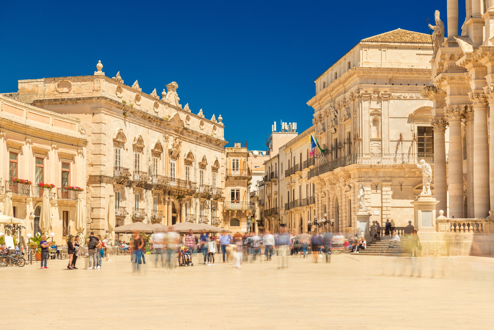
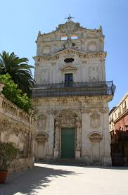
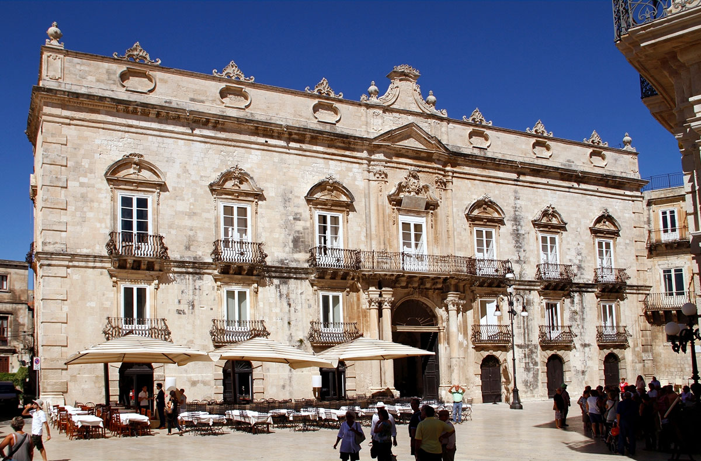

Piazza del Duomo a Siracusa, situata nel punto più alto dell'isola di Ortigia, è considerata una delle piazze più spettacolari d'Europa per la sua forma semiellittica e il candore della pietra calcarea. La sua storia è un palinsesto vivente: sorge sull'antico insediamento greco dove fu eretto il tempio di Atena nel V secolo a.C., trasformato poi in chiesa cristiana con l'avvento del bizantini. L'attuale volto scenografico è figlio della ricostruzione tardo-barocca seguita al terremoto del 1693, che ha regalato alla piazza un'armonia architettonica senza eguali, dove i palazzi nobiliari e le facciate religiose sembrano dialogare in un gioco di luci e ombre

Cosa Visitare

Chiesa di Santa Lucia alla Badia: che custodisce il "Seppellimento di santa Lucia"
di Caravaggio.

Palazzo Beneventano del Bosco: tra i più eleganti palazzi nobiliari siciliani dal
cortile monumentale.

Il Duomo: unico al mondo per le colonne del tempio greco incastonate nelle pareti
barocche.